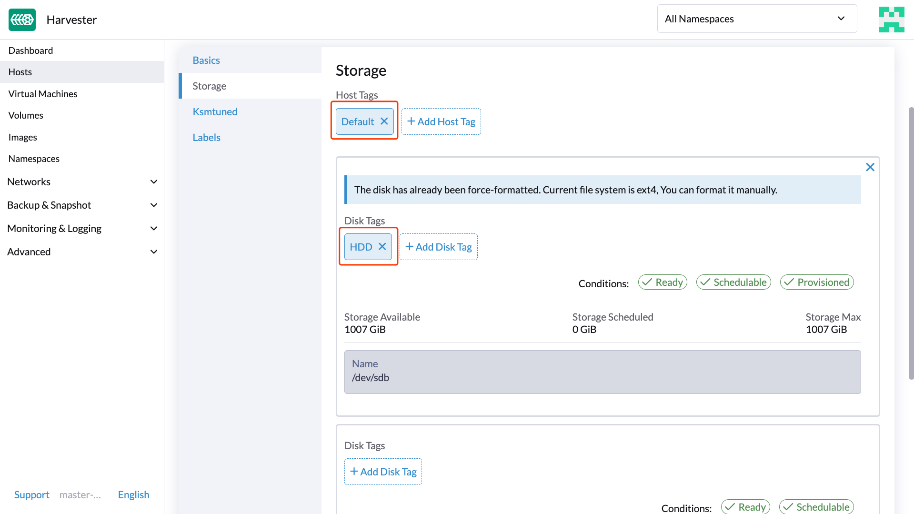

|
Dieses Dokument wurde mithilfe automatisierter maschineller Übersetzungstechnologie übersetzt. Wir bemühen uns um korrekte Übersetzungen, übernehmen jedoch keine Gewähr für die Vollständigkeit, Richtigkeit oder Zuverlässigkeit der übersetzten Inhalte. Im Falle von Abweichungen ist die englische Originalversion maßgebend und stellt den verbindlichen Text dar. |
StorageClass
SUSE Virtualization verwendet StorageClasses, um zu beschreiben, wie SUSE Storage Volumes bereitstellen muss. SUSE Storage StorageClasses können auf Replikationsrichtlinien, Knotenplanungsrichtlinien oder Festplattenplanungsrichtlinien abgebildet werden, die von den Clusteradministratoren erstellt wurden. Dieses Konzept wird in anderen Speichersystemen als Profile bezeichnet.
|
Die Standard-StorageClass Um dieses Problem zu vermeiden, können Sie eine der folgenden Aktionen durchführen:
|
Für Informationen zur Unterstützung der Volumenbereitstellung mit externen Container-Speicher-Schnittstellen (CSI) Treibern siehe Drittanbieter-Speicherunterstützung.
Erstellen einer StorageClass
-
UI
-
API
-
Terraform
|
Nachdem eine StorageClass erstellt wurde, werden die Felder im Abschnitt Parameter und die meisten anderen Optionen unveränderlich. |
-
Gehen Sie zu Erweiterte → StorageClasses.

-
Konfigurieren Sie im Abschnitt allgemeine Informationen Folgendes:
-
Name: Name der StorageClass.
-
Beschreibung (optional): Beschreibung der StorageClass.
-
Provisioner: Provisioner, der das Volumen-Plugin bestimmt, das für die Bereitstellung von Volumes verwendet werden soll.
-
-
Auf der Parameter-Registerkarte konfigurieren Sie Folgendes:
-
Anzahl der Replikate: Anzahl der Replikate, die für jedes SUSE Storage Volume erstellt werden. Der Standardwert ist
3. -
Timeout für veraltete Replikate: Anzahl der Minuten, die SUSE Storage wartet, bevor ein Replikat mit dem Status
ERRORbereinigt wird. Der Standardwert ist30. -
Knotenauswahl (optional): Knotentags, die während der Volume-Planung übereinstimmen müssen. Sie können Knotentags auf dem Bildschirm zur Hostkonfiguration hinzufügen (Host → Konfiguration bearbeiten).
-
Festplattenauswahl (optional): Festplattentags, die während der Volume-Planung übereinstimmen müssen. Sie können Festplattentags auf dem Bildschirm zur Hostkonfiguration hinzufügen (Host → Konfiguration bearbeiten).
-
Migrierbar: Einstellung, die Live-Migration für mit der StorageClass erstellte Volumes aktiviert. Der Standardwert ist
Yes.
-
|
Wenn eine StorageClass mit einer Replikatanzahl von |
-
Auf der Anpassen-Registerkarte konfigurieren Sie Folgendes:
-
Reclaim-Richtlinie: Die Reclaim-Richtlinie, die für mit der StorageClass erstellte Volumes gilt. Der Standardwert ist
Delete.-
Löschen: Löscht Volumes und die zugrunde liegenden Geräte, wenn der Volume-Anspruch gelöscht wird.
-
Beibehalten: Behält das Volume für eine manuelle Bereinigung.
-
-
Erlaube Volumenerweiterung: Einstellung, die die Volumenerweiterung ermöglicht, was das Ändern der Größe des Blockgeräts und die Erweiterung des Dateisystems umfasst. Wenn die Einstellung aktiviert ist, können Sie die Volumengröße erhöhen, indem Sie das entsprechende PVC-Objekt bearbeiten.
Sie können die Funktion zur Volumenerweiterung nur verwenden, um die Volumengröße zu erhöhen.
-
Volumenbindungsmodus: Einstellung, die steuert, wann die Volumenbindung und die dynamische Bereitstellung erfolgen. Der Standardwert ist
Immediate.-
Sofort: Bindet und stellt ein Volumen bereit, sobald das PVC erstellt wird.
-
WaitForFirstConsumer: Bindet und stellt ein Volumen bereit, sobald eine virtuelle Maschine, die das PVC verwendet, erstellt wird.
-
-
-
Klicken Sie auf Erstellen.
apiVersion: storage.k8s.io/v1
kind: StorageClass
metadata:
annotations:
storageclass.beta.kubernetes.io/is-default-class: 'true'
storageclass.kubernetes.io/is-default-class: 'true'
name: single-replica
parameters:
migratable: 'false'
numberOfReplicas: '1'
staleReplicaTimeout: '30'
provisioner: driver.longhorn.io
reclaimPolicy: Delete
volumeBindingMode: Immediate
allowVolumeExpansion: trueresource "harvester_storageclass" "single-replica" {
name = "single-replica"
is_default = "true"
allow_volume_expansion = "true"
volume_binding_mode = "immediate"
reclaim_policy = "delete"
parameters = {
"migratable" = "false"
"numberOfReplicas" = "1"
"staleReplicaTimeout" = "30"
}
}Einstellungen zur Datenlokalität
Sie können den dataLocality-Parameter verwenden, wenn mindestens eine Replik eines SUSE Storage-Volumes auf demselben Knoten wie das Pod, das das Volume verwendet, geplant werden muss (sofern möglich).
SUSE Virtualization unterstützt offiziell die Datenlokalität. Dies gilt auch für Volumes, die aus images erstellt wurden. Um die Datenlokalität zu konfigurieren, erstellen Sie eine neue StorageClass in der SUSE Virtualization-UI (Storage Classes → Erstellen → Parameter) und fügen Sie dann den folgenden Parameter hinzu:
-
Schlüssel:
dataLocality -
Wert:
deaktiviertoderbest-effort

Optionen zur Datenlokalität
SUSE Virtualization unterstützt derzeit die folgenden Optionen:
-
deaktiviert: Wenn angewendet, kann SUSE Storage eine Replik auf demselben Knoten wie das Pod, das das Volume verwendet, planen oder auch nicht. Dies ist die Standardoption. -
best-effort: Wenn angewendet, versucht SUSE Storage immer, ein Replikat auf demselben Knoten wie das Pod zu planen, das das Volume verwendet. SUSE Storage stoppt das Volume nicht, selbst wenn ein lokales Replikat aufgrund einer Umgebungsbeschränkung (zum Beispiel unzureichender Speicherplatz oder inkompatible Festplattentags) nicht verfügbar ist.
|
SUSE Storage bietet eine dritte Option namens |
Für weitere Informationen siehe Data Locality in der SUSE Storage Dokumentation.
Einstellungen des Containerized Data Importer (CDI)
SUSE Virtualization integriert sich mit dem Containerized Data Importer (CDI), um das Management von VM-Images für die folgenden StorageClasses zu übernehmen:
-
Longhorn V2 Data Engine
-
LVM
-
Speicher von Drittanbietern
Sie können die SUSE Virtualization UI oder CDI-Anmerkungen verwenden, um die Standardeinstellungen der StorageClass CDI-Attribute zu überschreiben.
|
Die SUSE Virtualization UI unterstützt derzeit nicht die Verwendung von CDI mit Drittanbieter-Speicher. Sie müssen die SUSE Virtualization CDI-Anmerkungen direkt auf die Drittanbieter-StorageClass anwenden. |
Um die Bearbeitung der CDI-Einstellungen für Day-2-Operationen zu ermöglichen, bietet SUSE Virtualization StorageClass-Attribute, die die zugrunde liegenden CDI-Einstellungen automatisch aktualisieren.
Jedes Feld auf dem CDI-Einstellungen Bildschirm entspricht einer Anmerkung in der StorageClass.
| UI-Feld | Anmerkung | Beschreibung | Unterstützte Werte | Beispiel |
|---|---|---|---|---|
Volume Mode / Access Modes |
|
Standard-PVC-Volume-Modus und Zugriffsmodi |
JSON-Objekt mit Volume-Modi und Zugriffsmodi |
|
Volume Snapshot Class |
|
Name der VolumeSnapshotClass, die beim Erstellen von Snapshots von virtuellen Maschinenbildern unter dieser StorageClass verwendet werden soll. Diese Einstellung gilt nur, wenn Sie die |
Gültiger Name der VolumeSnapshotClass |
|
Klonstrategie |
|
Klonstrategie, die für Volumes verwendet werden soll, die mit VM-Bildern erstellt wurden, die diese StorageClass verwenden. |
|
|
Dateisystem-Overhead |
|
Prozentsatz des Dateisystem-Overhead, der bei der Berechnung der PVC-Größe berücksichtigt werden soll. |
Dezimalwert zwischen 0 und 1 mit maximal 3 Ziffern |
|
Beispiel einer StorageClass YAML-Konfiguration:
apiVersion: storage.k8s.io/v1
kind: StorageClass
metadata:
name: lvm
annotations:
cdi.harvesterhci.io/storageProfileCloneStrategy: snapshot
cdi.harvesterhci.io/storageProfileVolumeModeAccessModes: '{"Block":["ReadWriteOnce"]}'
cdi.harvesterhci.io/storageProfileVolumeSnapshotClass: lvm-snapshot
cdi.harvesterhci.io/filesystemOverhead: '0.05'|
Vermeiden Sie es, das Speicherprofil oder CDI direkt zu ändern. Erlauben Sie stattdessen dem SUSE Virtualization Controller, die Konfiguration des Speicherprofils durch die Verwendung von CDI-Anmerkungen zu synchronisieren und zu persistieren. |
Die folgenden Werte sind die Standardwerte für die unterstützten StorageClasses:
-
Longhorn V2 Data Engine
-
cdi.harvesterhci.io/storageProfileCloneStrategy:"copy" -
cdi.harvesterhci.io/storageProfileVolumeSnapshotClass:"longhorn-snapshot"
-
-
LVM
-
cdi.harvesterhci.io/storageProfileVolumeModeAccessModes:'{"Block":["ReadWriteOnce"]}' -
cdi.harvesterhci.io/storageProfileCloneStrategy:"snapshot" -
cdi.harvesterhci.io/storageProfileVolumeSnapshotClass:"lvm-snapshot"
-
-
Speicher von Drittanbietern: Siehe
storagecapabilities.goim CDI-Repository. Wenn der Bereitsteller nicht aufgeführt ist, müssen Sie diecdi.harvesterhci.io/storageProfileVolumeModeAccessModes-Annotation angeben.
Anwendungsfälle
HDD-Szenario
Mit der Einführung von StorageClass können Benutzer jetzt HDDs für gestaffelten oder archivierten Kalt-Speicher verwenden.
|
HDD wird nicht für Gast-RKE2-Cluster oder VMs mit hohen Leistungsanforderungen an Festplatten empfohlen. |
Empfohlene Praxis
Zuerst fügen Sie Ihre HDD auf der Host-Seite hinzu und geben die Festplatten-Tags nach Bedarf an, wie HDD oder ColdStorage. Für weitere Informationen darüber, wie Sie zusätzliche Festplatten und Festplatten-Tags hinzufügen, siehe Multi-disk Management für Details.


Erstellen Sie dann eine neue StorageClass für die HDD (verwenden Sie die oben genannten Festplatten-Tags). Für Festplatten mit großer Kapazität, aber langsamer Leistung kann die Anzahl der Replikate reduziert werden, um die Leistung zu verbessern.

Sie können jetzt ein Volume mit den oben genannten StorageClass erstellen, wobei HDDs hauptsächlich für Kaltlagerung oder zur Archivierung verwendet werden.